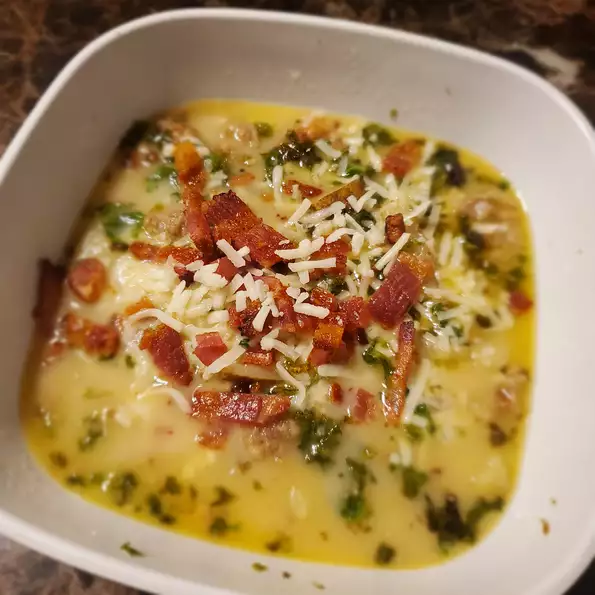

Zuppa Toscana

Description
Zuppa toscana is a broad based term, literally meaning "Tuscan soup" but in Italy it is called "Minestra di Pane"
meaning "Bread Soup". Classic zuppa toscana normally is a soup made from kale, zucchini, cannellini beans,
potatoes, celery, carrots, onion, tomato pulp, extra virgin olive oil, salt, powdered chili,
toasted Tuscan bread, and rigatino.
Ingredients
- 1 pound bulk mild Italian sausage
- 1 1/4 teaspoons crushed red pepper flakes
- 4 slices bacon, cut into 1/2 inch pieces
- 1 large onion, diced
- 1 tablespoon minced garlic
- 5 (13.75 ounce) cans chicken broth
- 6 potatoes, thinly sliced
- 1 cup heavy cream
- 1/4 bunch fresh spinach, tough stems removed
Steps
- Step 1: Cook the Italian sausage and red pepper flakes in a Dutch oven over medium-high
heat until crumbly, browned, and no longer pink, 10 to 15 minutes. Drain and set aside.
- Step 2: Cook the bacon in the same Dutch oven over medium heat until crisp,
about 10 minutes. Drain, leaving a few tablespoons of drippings with the bacon in the bottom of the
Dutch oven. Stir in the onions and garlic; cook until onions are soft and translucent, about 5 minutes.
- Step 3: Pour the chicken broth into the Dutch oven with the bacon and onion mixture;
bring to a boil over high heat. Add the potatoes, and boil until fork tender, about 20 minutes. Reduce the
heat to medium and stir in the heavy cream and the cooked sausage; heat through. Mix the spinach into the
soup just before serving.